Guía visual · En español · Desde cero
Devin Security Swarm
El producto de seguridad de Devin: un enjambre de agentes de IA que escanea tu repositorio en paralelo, comprueba en un sandbox aislado qué vulnerabilidades son explotables de verdad (no falsos positivos), y abre pull requests con el parche listo para revisar. Detecta desde inyección SQL y SSRF hasta bypasses de autorización encadenados entre varios archivos.
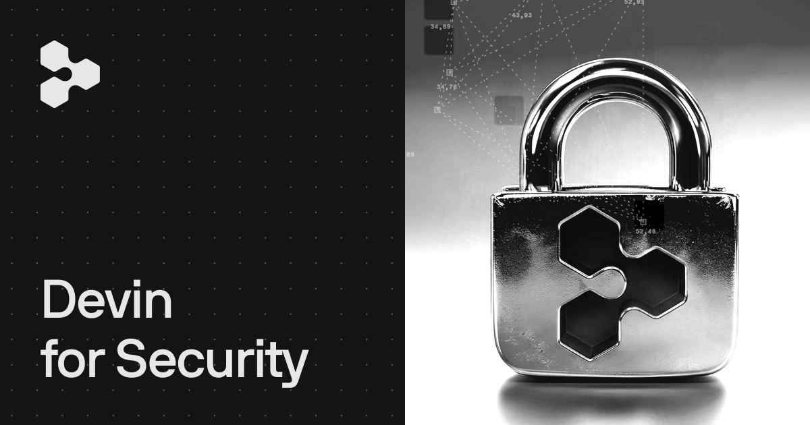
Imagen: Cognition
Esta orquestación se llama Agentic MapReduce: divide el repo entre agentes paralelos (cobertura amplia a costo acotado) y luego compone los hallazgos en rutas de ataque completas. Los escaneos corren como sesiones de Devin y consumen ACUs; el primer escaneo hace la línea base y los siguientes pueden ser incrementales, mirando solo los commits nuevos.
app.devin.ai. Si ves Security en el menú lateral, tienes acceso.Devin CLI
localpuente a la nube
Devin CLI es el agente corriendo en tu terminal, con acceso a tu código, tus
herramientas y tu entorno. Para seguridad es ideal en dos escenarios: auditar
puntualmente lo que tienes abierto ("¿este endpoint valida el tenant?") y lanzar
o delegar escaneos grandes hacia la nube con /scan y
/handoff.
# 1 · Instala el CLI (macOS/Linux; en Windows: la app Desktop o WSL) $ curl -fsSL https://cli.devin.ai/install.sh | bash # 2 · Autentícate con tu cuenta Devin $ devin auth login $ devin auth status # verifica que estás logueado # 3 · Entra a tu repo y abre una sesión interactiva $ cd mi-repo && devin # 4 · Pide la auditoría (dentro de la sesión) › audita src/ buscando SQLi, SSRF y bypasses de auth. Reporta: severidad, CWE, archivo:línea y ruta de exploit. # 5 · ¿El trabajo creció? Pásalo a la nube › /handoff # delega a un agente cloud con su propia máquina › /scan # inicia un code scan de Security Swarm
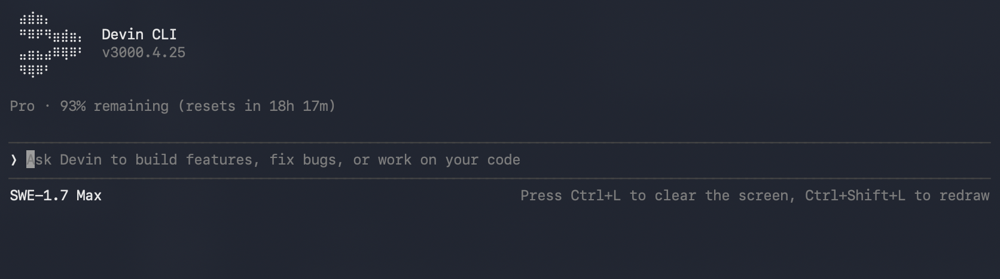
Tres formas de usarlo para seguridad
Solo preguntar — modo lectura
/ask ¿el endpoint POST /api/transfer valida que el usuario autenticado sea dueño de la cuenta origen? — Devin rastrea el flujo y responde citando archivo y línea, sin tocar nada. También existe /plan para explorar y proponer sin modificar archivos.
Auditar y arreglar — con permisos de edición
devin --permission-mode accept-edits -- "audita src/routes/ y corrige lo que encuentres" — Devin escribe el fix mínimo, añade tests de regresión y te explica la ruta de exploit de cada hallazgo. Cicla modos con Shift+Tab.
Escalar a la nube — el trabajo pesado
/scan— inicia un code scan de Security Swarm sobre el repo (corre en la nube, consume ACUs)./handoff— transfiere la sesión a un agente remoto con su propio entorno; sigues el progreso en vivo desde la terminal.
@ para adjuntar archivos como contexto ·
/mcp lista servidores MCP conectados ·
devin cloud drs secret-create sube secretos de organización sin pegarlos en el chat.
Devin Desktop
IDE + agenteslocal y nube en un panelDevin Desktop es la aplicación de escritorio — la evolución de Windsurf. Pone el Agent Command Center al frente de un IDE completo: gestionas agentes locales y de nube, PRs y contexto desde un solo lugar, y los Spaces permiten que agentes relacionados compartan contexto entre sí (por ejemplo, uno audita mientras otro prepara los fixes).
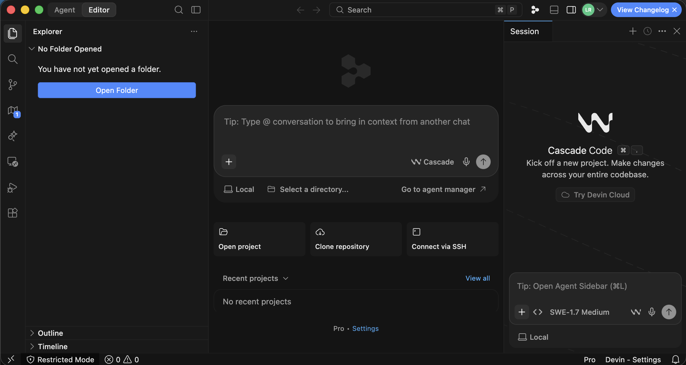
1 2 3Descarga e instala
Desde devin.ai para Windows, macOS o Linux. Si venías de Windsurf, es la misma aplicación renombrada — el cambio llegó como update normal y conserva tu plan y tu trabajo.
Inicia sesión
Con la misma cuenta/organización Devin que usas en la web. Las sesiones que lances aquí conviven con las de Cloud.
Abre el proyecto
Open Folder para un repo local, Clone repository para traerlo de tu proveedor, o Connect via SSH para trabajar sobre una máquina remota.
Nueva sesión → pide la auditoría
En el prompt del centro o del panel lateral, describe qué quieres revisar. Ejemplo: "Audita este proyecto: rastrea la entrada del usuario hasta cada operación sensible, verifica autenticación y validación en cada frontera, y reporta cada hallazgo con severidad, CWE y archivo:línea."
Escaneo completo → nube
Escribe /scan en el composer para lanzar un code scan de Security Swarm, o usa /handoff para delegar la sesión a un agente cloud. Los findings resultantes se revisan en la página Security de Devin Cloud.

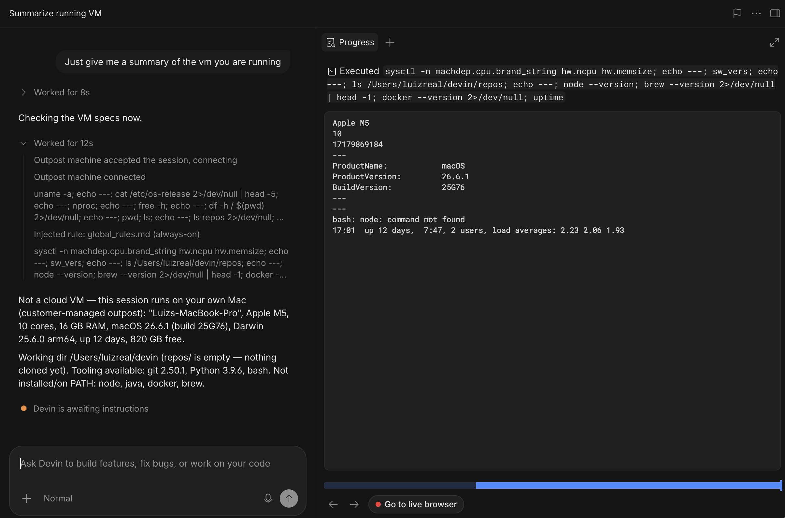
Devin Cloud
Security Swarm completorecomendado para empezar
La webapp app.devin.ai es donde vive todo el producto: lanzar y
programar escaneos, revisar el threat model, hacer triage de findings, validar en
sandbox, asignar remediaciones a Devin y medir el progreso en el dashboard.
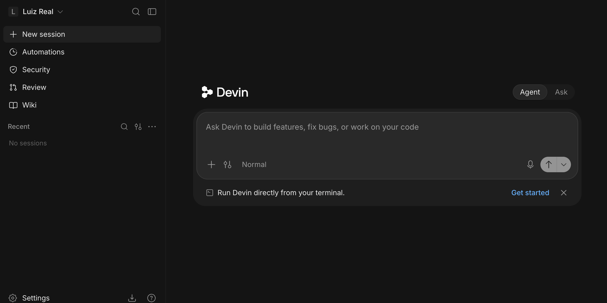
1 2/scan).
Imagen: Luiz Real (Substack)
/scan
Tu primer escaneo, en video
Security → Start scan → Single repo → elige el repo → Run Scan
Deja el perfil en blanco (usa el escaneo de seguridad integrado) y mantén Interactive mode activado — viene así por defecto en el primer escaneo de la organización.
Aprueba el threat model propuesto
Devin pausa y te muestra las reglas que va a aplicar: atacante asumido, activos sensibles, entry points y exclusiones. Pulsa "Looks good, start scanning" para aceptar, o escribe feedback ("los scripts de /tools están fuera de alcance") y Devin regenera el modelo.
Mira los findings llegar en vivo
La página se actualiza sola: lista agrupada por severidad a la izquierda, detalle a la derecha, y pestañas Open / Reviewed / Dismissed con conteo en tiempo real.
Anatomía de un finding
src/api/users.ts:42 — CWE-89
El parámetro ?q= llega sin sanitizar al query builder. Explotable sin
autenticación: expone emails de todos los tenants. Trazado desde la ruta hasta el
sink, con las mitigaciones comprobadas en cada capa.
Fix sugerido: parametrizar la consulta y añadir test de regresión.
Ilustración basada en la UI real. Cada finding incluye severidad, estado, explotabilidad, confianza, categoría CWE, archivos y snippets afectados, descripción, recomendación de remediación, resultado de la validación en sandbox y los PRs asociados. Nota: Reviewed es un estado de triage — no significa que el fix se mergeó.
Las 4 acciones sobre un finding
Por qué Swarm: el benchmark oficial
Recall sobre 50 vulnerabilidades reales con GHSA publicada, en repos de 14 lenguajes. Devin fue el único que encontró tres críticas que el resto no vio (sandbox bypass por template injection en PHP, argument injection por parsing de metadata, superficie de deserialización amplia en Spring Kafka). ~$90 por corrida — un 30% menos que la alternativa comparable. Fuente: Cognition — eval de Security Swarm.
Después del primer escaneo
Perfiles de escaneo
Configuración reutilizable que guía cada etapa: threat model, investigación, triage/severidades, validación en sandbox, reporte y remediación. Se crean con "Generate with Devin" (describes la app en lenguaje natural) o a mano, y se gestionan en la pestaña Profiles. Consejo: un perfil por persona de atacante.
Modos de escaneo
Single repo (un repo) · Multi-repo (hasta 200 analizados en conjunto — ideal para microservicios que se llaman entre sí) · Bulk scan (un escaneo independiente por repo, para cubrir toda la org) · Ingest findings (importa findings de Snyk, Semgrep, SARIF, etc. para triagearlos y remediarlos en Devin).
Esfuerzo: Normal vs Deep
Normal es más rápido y barato — para rutina e incrementales. Deep rastrea cada finding más a fondo — para el primer escaneo serio de un codebase de alto riesgo o revisiones profundas periódicas.
Auto Scan e incrementales
Al lanzar un single-repo eliges schedule diario/semanal/mensual/custom; cada corrida solo investiga los commits nuevos (más barato con el tiempo). No es por cada commit — es por horario; para disparo por evento (push, webhook) usa Automations → "Code scan". Para apagarlo: edita o desactiva el schedule desde el escaneo, o apaga el toggle de la automation. También puedes lanzar lo incremental a mano con "Scan new commits".
Dashboard, historial y API
Tras el primer escaneo, la página Security muestra PRs creados/mergeados y findings por severidad a 7/30/90 días. Cada escaneo guarda su scan history (full vs incremental, ACUs, sesión), exporta findings a CSV, y todo es alcanzable vía la Code Scans API v3 para integrarlo en CI o tu tooling.
Permisos — si algo no te aparece, es esto
| Permiso | Desbloquea | Por defecto |
|---|---|---|
| View code scans | Ver escaneos, perfiles y findings | Admin |
| Use code scans | Lanzar escaneos, crear perfiles, dar feedback, ajustar y asignar findings | Admin |
| Manage code scans | Archivar escaneos y configurar Auto Scan | Admin |
| Manage account code scans | Perfiles a nivel enterprise | Enterprise admin |
Los miembros no reciben permisos de escaneo por defecto — un admin los otorga con roles personalizados. Iniciar escaneos y asignar findings también requiere permiso de sesiones Devin; Auto Scan además requiere gestionar automatizaciones. Para CLI/Desktop hace falta el permiso "Use Devin CLI".
10 artículos y guías para profundizar
Selección de guías con pasos e imágenes, agrupadas por lo que preguntas: configurar el repo, "promptear" a Devin/Swarm, y activar o desactivar el escaneo automático de commits nuevos.
Configurar tu repositorio
Security Swarm solo escanea repos conectados a tu organización. Estas guías cubren la integración con GitHub/GitLab y la configuración del entorno (el "snapshot" desde el que arranca cada sesión — clave para que la validación en sandbox funcione).
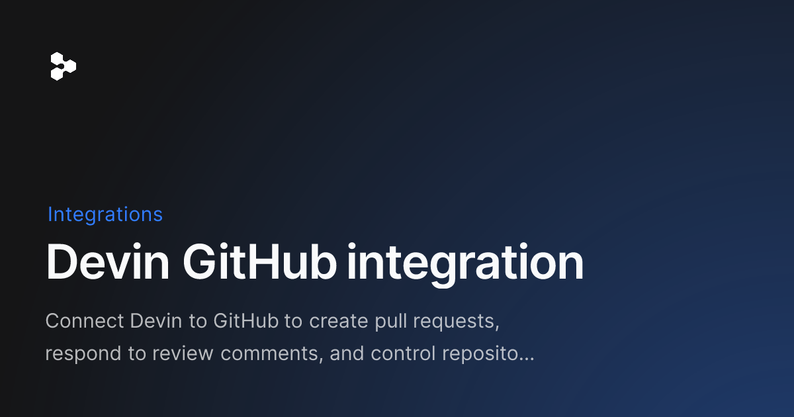
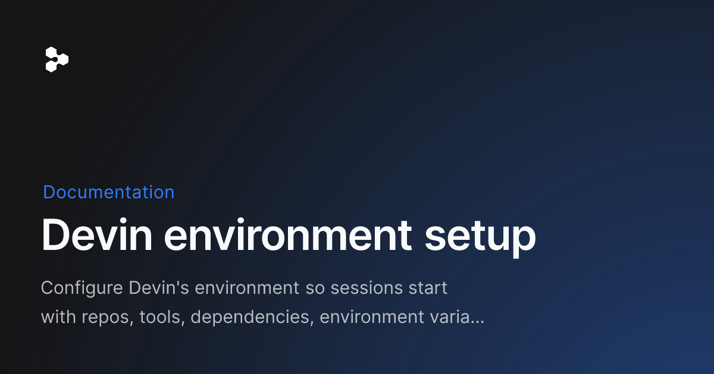
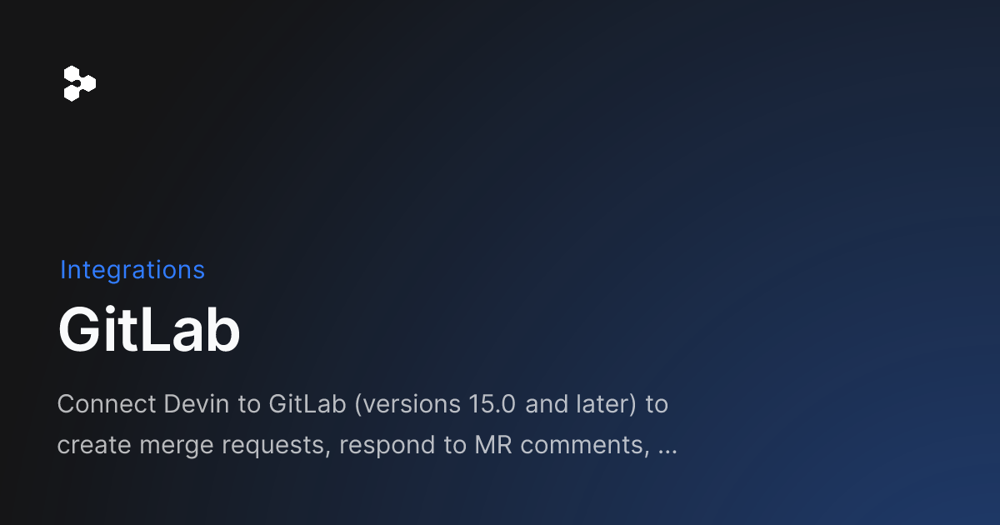
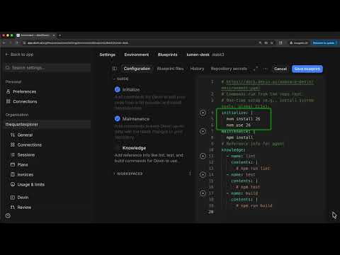
Cómo "promptear" a Devin y a Security Swarm
Con Swarm no escribes un prompt libre: escribes el perfil (threat model, investigación, severidades, validación, remediación). Estas guías enseñan a dar instrucciones precisas y a convertirlas en perfiles y playbooks reutilizables.
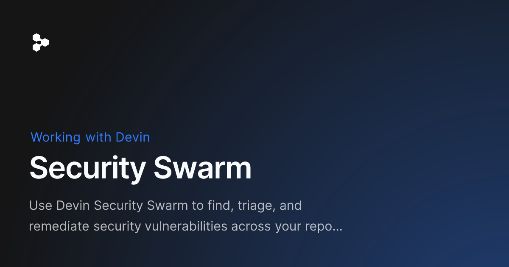
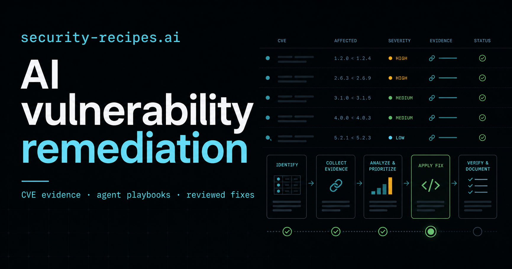
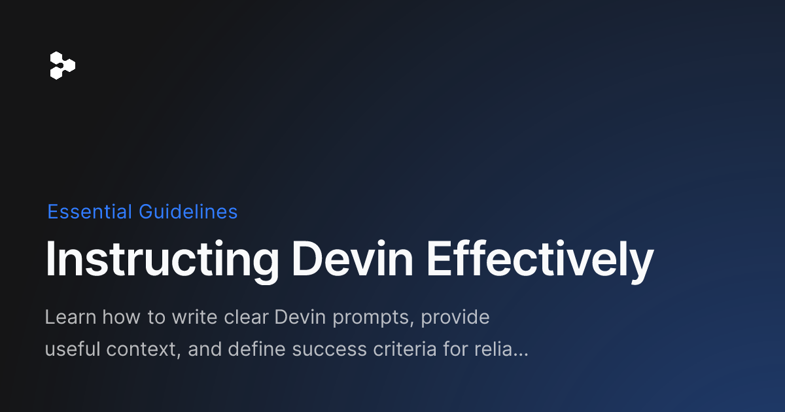
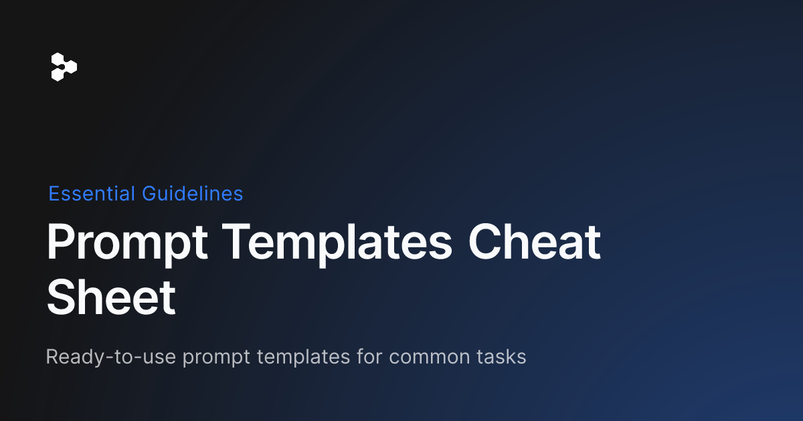
Activar / desactivar el escaneo proactivo
Aclaración importante: el modo "proactivo" no escanea en cada commit al instante — Auto Scan corre en un horario (diario, semanal, mensual o custom) y solo investiga los commits acumulados desde la última corrida (incremental). Para algo realmente "por evento" (push, webhook) se usa Automations con el agente "Code scan". Se apaga igual de fácil: edita o desactiva el schedule del escaneo, o apaga el toggle de la automation.